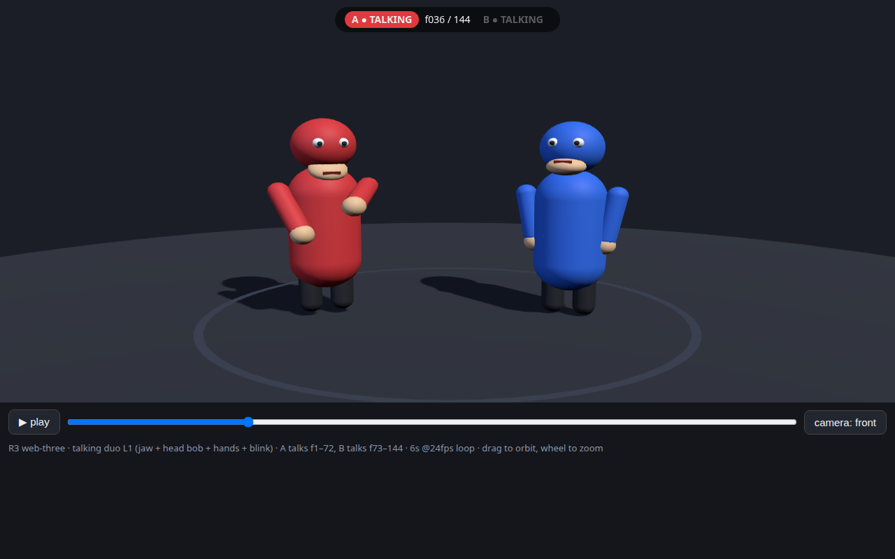
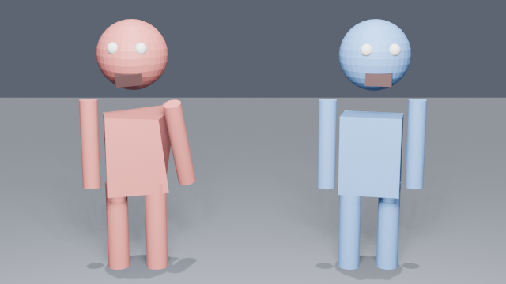
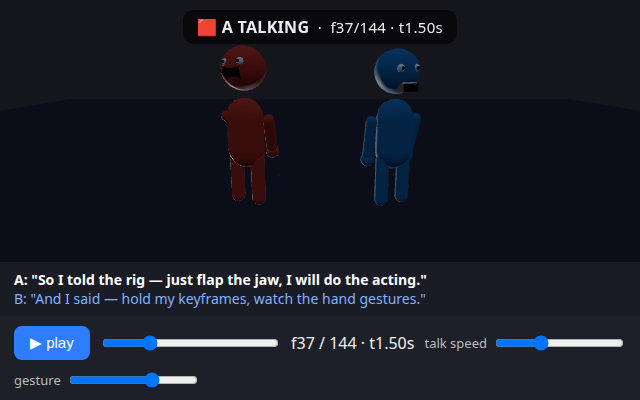
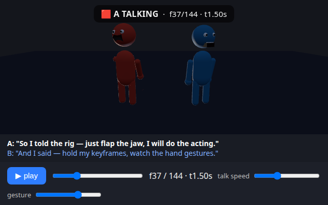
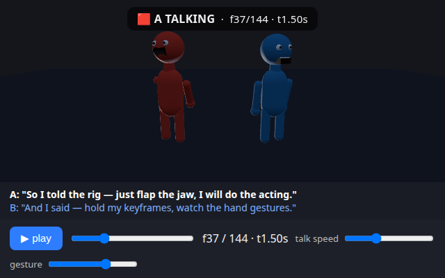
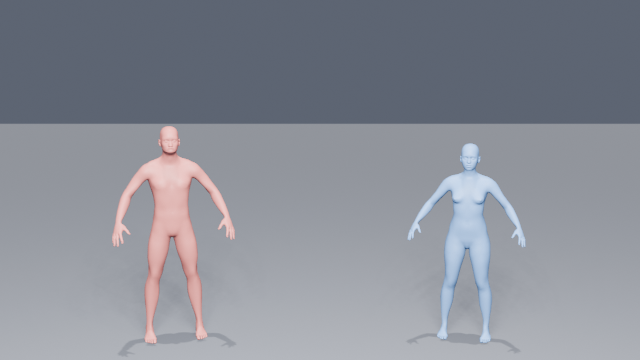

Round 3 — how far did each one get in 10 minutes?
Same time for all. Photos show minute 1, 2, 5 and 10. The point is progress, not same result.
1. Web simple (fastest to play)



Full cartoon at minute 1. You can move the camera. Open playable page
2. Blender simple (capsules)




Full video at minute 1. Simple shapes, clean motion. No play, only video.
3. Free choice (also chose web)



Playable page from minute 1, video from minute 5. Open playable page
4. Blender humans (realistic people)


Slow start. First photo only at minute 2, full video at minute 5. Best looking people, slowest to build.